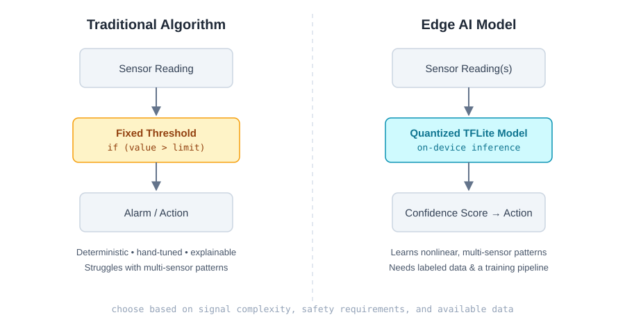

Every time I design a sensing pipeline for an MCU-class device, the same question comes up before a single line of firmware gets written: does this need a model, or does it need a threshold?
It's tempting to reach for machine learning by default in 2026. But on a $2 microcontroller running on a coin cell, the wrong choice costs you battery life, latency, and certification headaches. Here's how I actually decide between a traditional algorithm and an Edge AI model — and why, more often than people expect, the boring answer wins.

Fig. 1 — Traditional threshold logic vs. an on-device Edge AI model
What I Mean by "Traditional Algorithm"
A traditional algorithm here means deterministic, hand-authored logic: fixed thresholds, finite state machines, PID control loops, moving averages, FFT-based frequency analysis, and rule-based decision trees. The behavior is fully specified by the engineer — given the same input, it always produces the same output, and you can trace every branch by hand.
What I Mean by "Edge AI Model"
An Edge AI model is a machine learning model — typically a quantized TFLite Micro network, a small CNN, or a GRU/LSTM — trained on data and deployed to run inference directly on the device, without a round trip to the cloud. It learns the decision boundary from examples rather than from rules the engineer writes explicitly.
Traditional Algorithm: Pros and Cons
| Pros | Cons |
|---|---|
| Fully deterministic and explainable — every decision traces to a line of code | Brittle against noisy, drifting, or multi-variable real-world signals |
| Tiny memory and compute footprint, runs on the cheapest MCUs | Thresholds have to be hand-tuned per device, per environment, per install |
| Trivial to certify and audit for safety-critical systems | Doesn't generalize — a new failure pattern needs new code, not new data |
| No training data or labeling pipeline required | Struggles to fuse many sensor channels into one confident decision |
Edge AI Model: Pros and Cons
| Pros | Cons |
|---|---|
| Learns complex, nonlinear, multi-sensor patterns humans can't hand-encode | "Explainability" is harder — you get a confidence score, not a reason |
| Generalizes across devices and conditions once trained on representative data | Needs a labeled dataset and a training/validation pipeline before it ships |
| Improves by retraining on new data instead of rewriting logic | Larger memory/flash footprint, even after INT8 quantization |
| Handles sensor fusion (vibration + temperature + current) as one model | Model drift and edge cases require monitoring, not just a code review |
Why Edge AI Model Instead of Traditional Algorithm
I reach for an Edge AI model when at least one of these is true:
- The failure signature is multi-dimensional. A bearing about to fail doesn't just vibrate louder — it changes frequency signature, temperature, and current draw together. Encoding that as nested if/else thresholds gets unmaintainable fast; a small GRU learns the joint pattern directly.
- The environment isn't static. Threshold-based systems assume "normal" looks the same everywhere. A model trained on diverse conditions generalizes across machines, installs, and seasons without a re-tuning pass at every site.
- False positives/negatives have a real cost. A single fixed threshold forces a trade-off between missed detections and nuisance alarms. A trained classifier can push the ROC curve further than a hand-picked cutoff ever will.
- You have — or can generate — labeled data. Machine learning is only worth the added complexity if there's a dataset to learn from. No data, no model.
And I deliberately don't reach for a model when the opposite is true: a single clean signal, a hard safety limit that must never be probabilistic, or a product that has to ship before any training data exists. In those cases, a threshold or a state machine is not a compromise — it's the correct engineering choice.
Examples From Production Systems
Fire Suppression Trigger (Traditional → Edge AI)
On the Physical AI framework I built at Epic Safety, the first-generation trigger logic was a fixed temperature/smoke-density threshold on an ESP32. It worked, but it couldn't tell a real ignition event from a false alarm caused by welding sparks or steam. Replacing the threshold with a quantized TFLite model — trained on labeled thermal and smoke sensor traces — cut false positives significantly while holding sub-100ms inference latency on the same hardware.
Industrial Vibration Monitoring (Threshold → GRU)
A classic vibration alarm trips when RMS amplitude crosses a fixed line. On the Industrial Edge AI Gateway project, a GRU-based inference engine running on TFLite Micro replaced that threshold, learning the difference between a normal startup transient and an actual bearing fault — something a single amplitude cutoff structurally cannot distinguish.
Motion Detection (Traditional, and it stayed that way)
Early motion detection work I did on MPEG-2 TS streams at Varovision used frame-difference and macroblock-based algorithms — no ML involved. For that use case, a lightweight deterministic algorithm was the right call: the signal was simple, latency budgets were tight, and the hardware of that era couldn't have run a model anyway. Not every problem needs to wait for a neural network.
A Simple Decision Model
| Question | Traditional Algorithm | Edge AI Model |
|---|---|---|
| Single, clean signal? | ✅ Yes | Overkill |
| Multi-sensor fusion needed? | Gets messy fast | ✅ Yes |
| Hard safety limit, must be provable? | ✅ Yes | Avoid as the sole gate |
| Conditions vary across deployments? | Needs per-site tuning | ✅ Yes |
| No labeled data available yet? | ✅ Yes, ship this first | Not yet |
Guardrails: Protecting Against a Wrong Model Decision in Critical Cases
Deciding a problem genuinely needs a model is only half the job. The other half is making sure a wrong prediction never becomes a safety incident. On systems where the output drives a fire suppression relay, a shutdown, or anything else with real consequences, I treat the model as an advisor, never the sole authority — and I enforce that with a specific set of guardrails, not good intentions.
- Keep a deterministic hard limit as the final veto. The model can raise or lower confidence, but a hard-coded, provable safety limit still has independent authority to trigger — and to block a model-driven action that would violate it. If the model says "safe" but the hard limit says the smoke density is out of range, the hard limit wins.
- Require a confidence threshold, and define what happens below it. Don't act on a raw class label — act on "class X with confidence ≥ N." Below that threshold, the system doesn't guess; it falls back to the traditional algorithm or escalates for review.
- Demand temporal consistency, not a single inference. A single high-confidence frame can be a sensor glitch. Require the model to agree across several consecutive windows (an N-of-M pattern) before a critical action fires — the same debounce principle a threshold system already uses, applied to model output.
- Bound the action, not just the confidence. Whatever the model outputs, clamp the resulting action to a physically plausible envelope. A model shouldn't be able to command a state the hardware or the safety case never anticipated.
- Validate the input before you trust the output. Detect out-of-range sensor values, stuck sensors, and inputs far outside the training distribution before they reach the model. A model asked to classify garbage will confidently classify garbage.
- Choose a fail-safe default, deliberately. Decide in advance what happens on model timeout, crash, or low confidence — and make that default the safe state, not "do nothing." For a fire suppression system, ambiguous is closer to "trigger" than to "ignore."
- Log every decision with its inputs. You lose the traceability of an if/else chain the moment you add a model, so you have to build it back: log the feature vector, confidence, and final action for every trip so a failure can be reconstructed.
- Ship new models in shadow mode first. Before a model gets authority over a critical action, run it in parallel with the existing deterministic system, logging what it would have done without acting on it. Compare the two before cutting over.
- Monitor for drift after deployment. A model validated on last year's sensor data can quietly degrade as hardware ages or conditions shift. Track prediction confidence and agreement with the deterministic layer over time — a slow decline is a signal to retrain, not a mystery to explain later.
| Guardrail | Failure Mode It Prevents |
|---|---|
| Deterministic veto | Model overrides a known, provable safety limit |
| Confidence threshold + fallback | Low-confidence guess treated as a certain decision |
| N-of-M temporal consistency | Single noisy frame triggers a critical action |
| Bounded action envelope | Model commands a physically implausible or unsafe state |
| Input validation / OOD detection | Model confidently misclassifies a faulty or out-of-range sensor reading |
| Fail-safe default | Timeout or crash silently falls back to "do nothing" |
| Decision logging | A wrong call can't be reconstructed or audited afterward |
| Shadow-mode rollout | An unproven model gets authority on day one |
| Drift monitoring | A model that degrades in production goes unnoticed |
None of this makes the model itself explainable. It makes the system around the model accountable — which is the actual requirement in a safety review. A model that's wrong 2% of the time is fine if the rest of the architecture is built to catch that 2% before it ever reaches the relay.
Final Thoughts
Edge AI doesn't replace traditional algorithms — it extends the toolbox for the problems thresholds were never built to solve. The best embedded systems I've shipped usually mix both: a deterministic safety floor built from simple rules, with a model layered on top for the nuanced, multi-signal judgment calls. Pick the tool the problem actually needs, not the one that's trending.